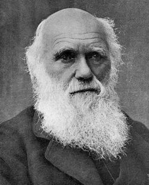

爱因斯坦
1879年3月14日—1955年4月18日
被称为"现代物理学之父"
居里
1867年11月7日—1934年7月4日
被称为"镭的母亲"
普朗克
1858年4月23日—1947年10月4日
被称为"量子之父"
弗洛伊德
1856年5月6日—1939年9月23日
被称为"精神分析之父"
爱迪生
1847年2月11日—1931年10月18日
被称为"发明大王"

达尔文
1809年2月12日—1882年4月19日
进化论的奠基人
法拉第
1791年9月22日—1867年8月25日
被称为"电学之父"和"交流电之父"
牛顿
1643年1月4日—1727年3月31日
被誉为"近代物理学之父"
伽利略
1564年2月15日—1642年1月8日
被称为"观测天文学之父"、"现代物理学之父"、"科学方法之父"、"现代科学之父"
哥白尼
1473年2月19日—1543年5月24日
日心说的创始人